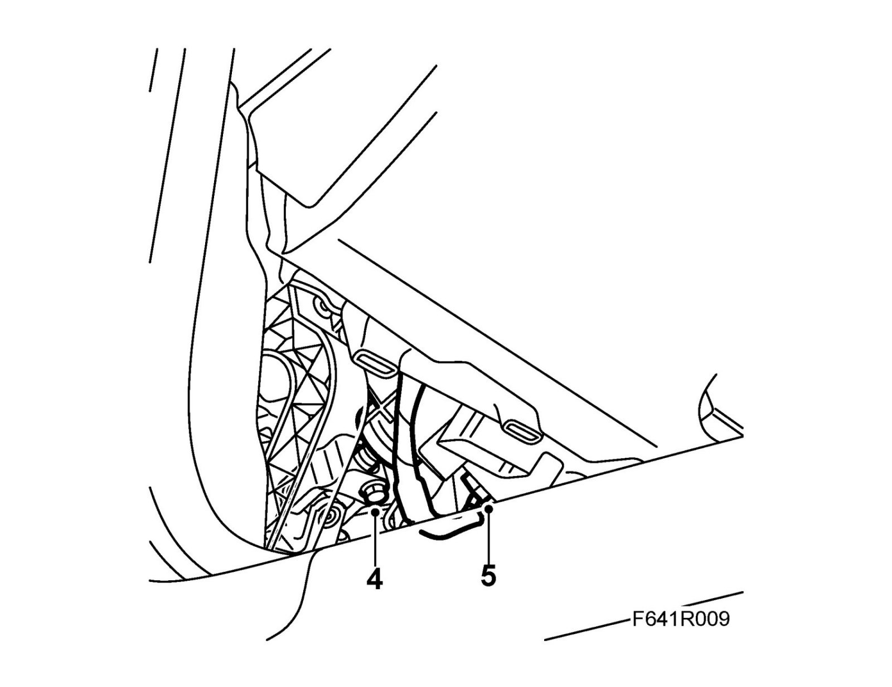
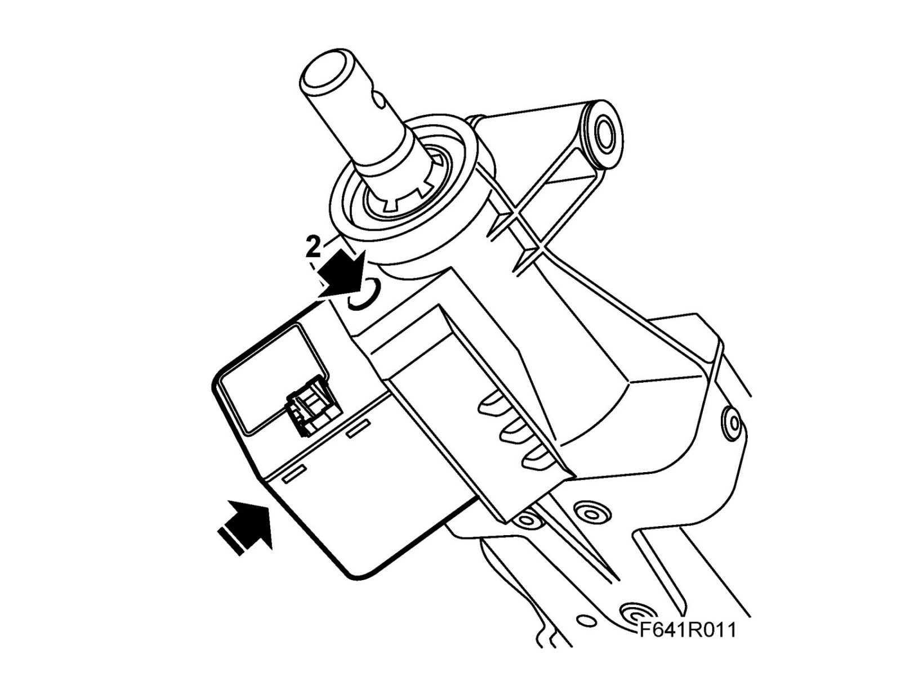
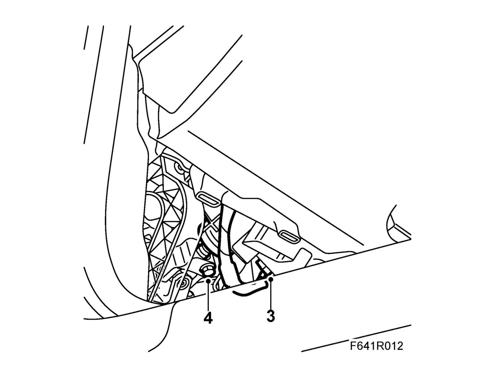

Steering Column Lock: Service and Repair
Steering wheel lock unit, SCLTo remove
Note
The steering column lock must be unlocked for removal.
The key must be in the ignition switch in the LOCK position.
1. Turn the key to LOCK and allow the key remain in the ignition switch.
Note
The steering column lock must be unlocked for this procedure.
2. Remove the sound insulating baffle on the driver's side.
3. Turn the steering wheel so that the steering shaft joint can be accessed.
Fixate the steering wheel with fabric-backed tape to the instrument panel so as to avoid damaging the contact roller.
4. Remove the steering shaft joint from the steering shaft.

5. Remove the connector.
6. Tighten the bolt fully to lift off the lock unit.
To fit
1. If refitting the same lock unit: Unscrew the bolt fully.
Apply 74 96 268 Threadlock to the bolt and screw this into the lock unit.
2. Position the lock unit and screw out the bolt.
Tightening torque 6 Nm (4.5 lbf ft)
Important
Tightening torque that is too high causes the lock piston to bind and as a result not lock/unlock. The message is shown in SID.

3. Plug in the connector.

4. Fit the steering shaft joint to the steering shaft. Clean the threads and apply 74 96 268 Threadlock to the threads.
Warning
Make sure the screws fits into the groove in the steering shaft.
Tightening torque 30 Nm (19 lbf ft)
5. Remove the tape.
6. After fitting a new steering column lock unit: Connect the diagnostic tool and program the unit to the car as follows.
6.a. Select Diagnostics
6.b. Select Model Year(s)
6.c. Select Vehicle Type(s)
6.d. Select All
6.e. Select Add / Remove
6.f. Select Other Components
6.g. Select SCL
6.h. Select Add
6.i. Follow the instructions in the diagnostic tool
7. Disconnect the diagnostic tool.
8. Check the function of the steering column lock.
Note
When the unit has been disconnected from the voltage supply the car must be driven at a speed of at least 7km/h and then stopped before the function is operative.
9. Fit the sound insulating baffle on the driver's side.